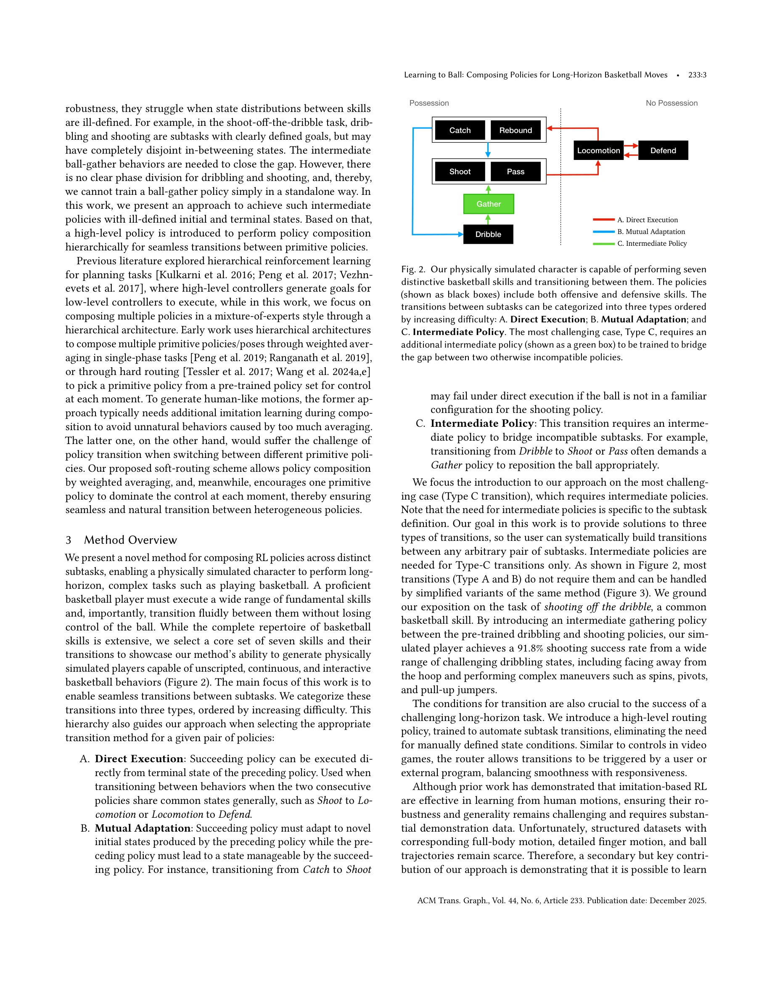
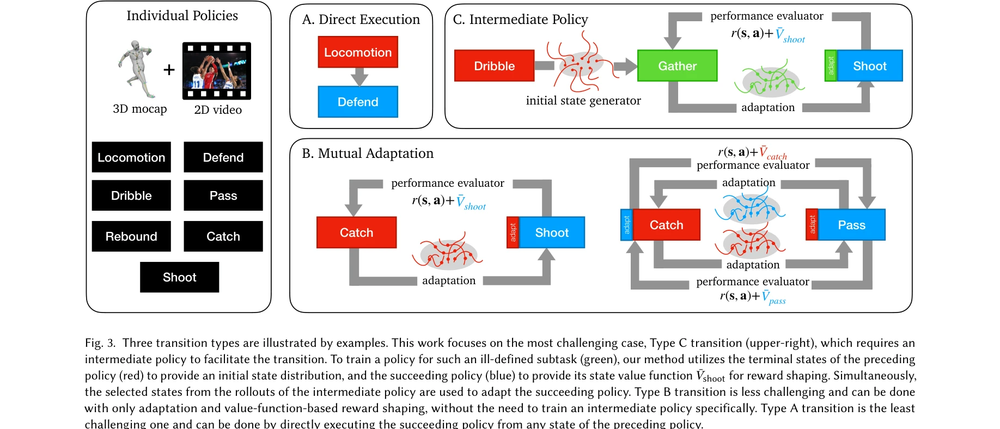

Essence

Fig. 1. We introduce a novel policy integration framework to enable the composition of drastically different motor skill
농구 동작과 같은 다단계 장기 과제에서 정의되지 않은 중간 상태를 가진 이질적인 스킬들을 seamlessly 합성하기 위해 policy integration framework와 soft routing을 제안한다.
저자: Pei Xu, Zhen Wu, Ruocheng Wang, Vishnu Sarukkai, Kayvon Fatahalian, Ioannis Karamouzas, Victor Zordan, C. Karen Liu | 날짜: 2025-09-26 | URL: https://arxiv.org/abs/2509.22442
Fig. 1. We introduce a novel policy integration framework to enable the composition of drastically different motor skill
농구 동작과 같은 다단계 장기 과제에서 정의되지 않은 중간 상태를 가진 이질적인 스킬들을 seamlessly 합성하기 위해 policy integration framework와 soft routing을 제안한다.

Fig. 2. Our physically simulated character is capable of performing seven

Figure 4 shows our system architecture for primitive policy learn-
총평: 본 논문은 ill-defined 중간 subtask를 다루기 위한 혁신적인 policy integration framework를 제시하며, soft routing과 adaptive fine-tuning을 통해 다단계 장기 과제에서 이질 스킬의 seamless 합성을 실현한다. 실시간 사용자 명령 기반의 자유로운 농구 플레이와 높은 슈팅 정확도는 제안 방법의 유효성을 강력히 입증하나, 시뮬레이션 환경 한정과 방법의 일반화 가능성이 향후 과제이다.